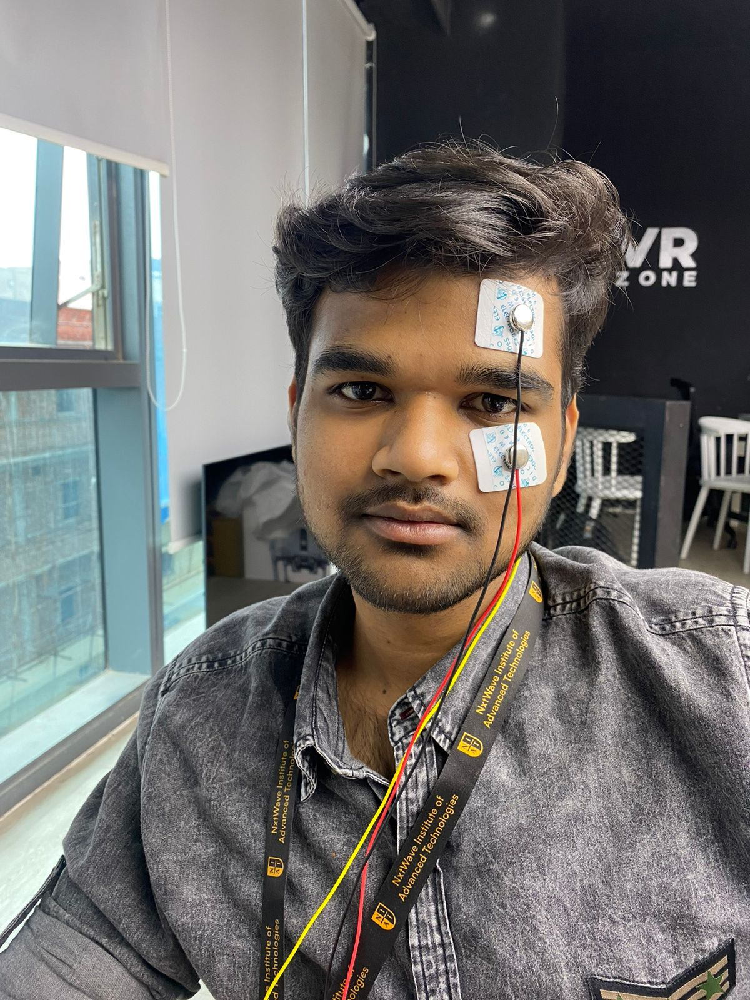
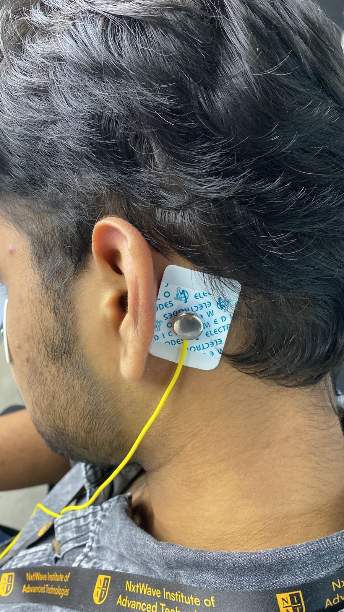
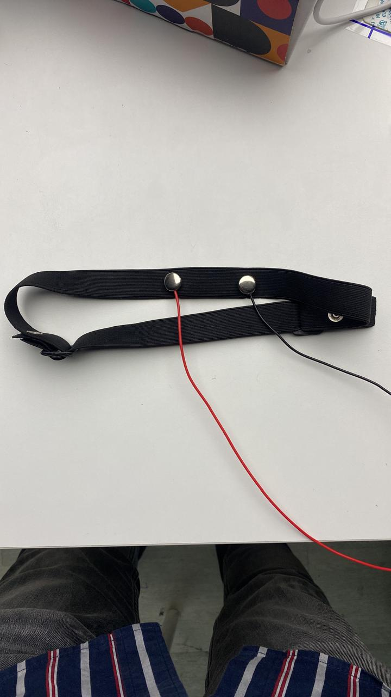
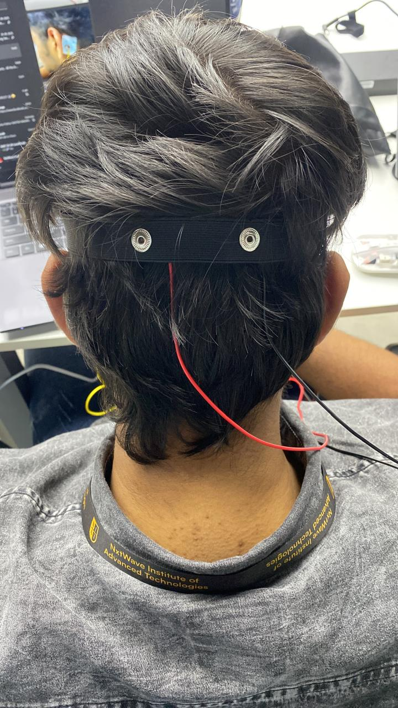
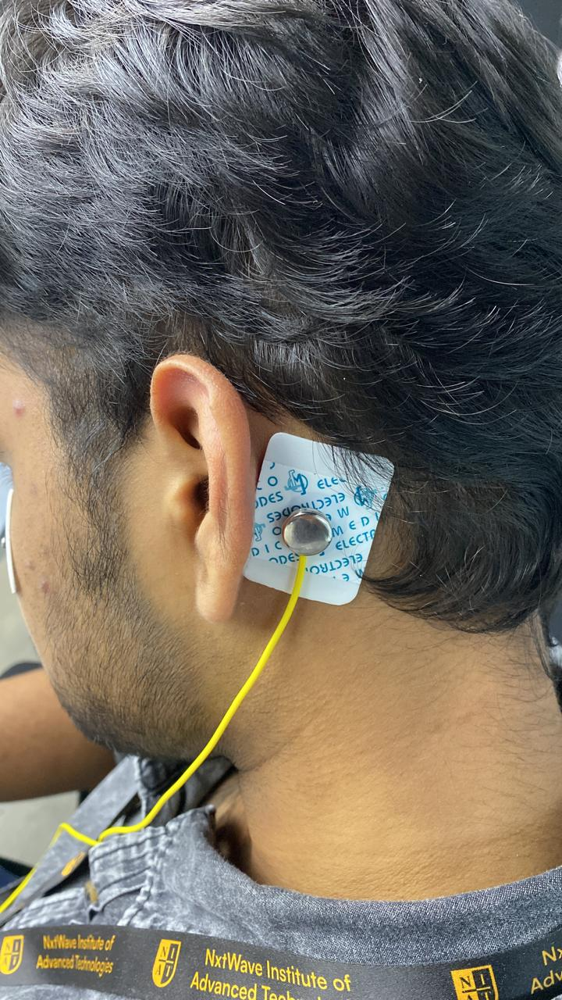

Project 2: MindScope 🔮 → Detecting Emotions Using EEG
In this project, you will record EEG signals using the BioAmp EXG Pill
and an arduino Dev Board, extract brainwave bandpowers using FFT,
and classify emotional states like Focused, Calm, Drowsy, Daydreaming, Hyper-aware.
The output appears live in the Serial Monitor.
🧰 Hardware Required
arduino Dev Board
BioAmp EXG Pill
BioAmp Cable v3
3 × Gel Electrodes
3 × Jumper Cables
NuPrep Skin Preparation Gel
Wet Wipe
Brain BioAmp Band (optional)
Electrode Gel (if using Brain BioAmp Band)
💻 Software Required
Arduino IDE
🔌 Circuit Diagram


🧪 Step 1: Upload the EEG Emotion Detection Program
📍 Electrode Placement

Place the two EEG electrodes on the Brain BioAmp Band.
IN+ on the left side, IN− on the right side.
Ensure metal points touch the skin firmly.

Place the band properly on the forehead.
Keep the band tight enough for stable contact.
Avoid hair covering the electrodes.

Attach the REF electrode behind the earlobe.
Place it on the hard bony area for stability.
This improves noise reduction and signal clarity.
🧠 Step 1 Code: EEG Emotion Detection
Create a new sketch in Arduino IDE and paste the following code:
Project 3: Blink-a-saur 🦖 → Control Dino Game Using EOG Signals
In this project, you will create a fun game controller that lets you
play the Chrome Dino Game using your eye blinks.
Using EOG (Electrooculography) signals from your eyes,
the system detects blinks and triggers a keyboard SPACE press — making the Dino jump!
👁️ What is Electrooculography (EOG)?
Electrooculography measures the electrical potential produced by eye movement.
The cornea is positively charged, the retina is negatively charged — creating the
electrooculogram. When you blink, this voltage changes, and we detect it using
the BioAmp EXG Pill.
🧰 Supplies Needed
HARDWARE:
DIY Neuroscience Kit Pro
BioAmp Cable (100 cm)
Gel Electrodes
NuPrep Skin Preparation Gel
Wet wipes
SOFTWARE:
Arduino IDE
Visual Studio Code
Python
🔬 About DIY Neuroscience Kit Pro
A complete portable neuroscience lab for EEG, EMG, ECG and EOG recordings —
designed for HCI and BCI projects.
🧪 Step 1: Stack Muscle BioAmp Shield on Arduino Uno
Carefully align the pins and stack the Muscle BioAmp Shield on top of Arduino Uno.
🧪 Step 2: Connecting BioAmp EXG Pill
Connect the BioAmp EXG Pill to the A2 port using the STEMMA cable.
🔌 Step 3: Connecting Electrode Cable
Plug the BioAmp Cable into the EXG Pill exactly as shown.
🧴 Step 4: Skin Preparation
Apply NuPrep Gel → rub gently → clean with wet wipe.
This reduces skin impedance and improves EOG signal quality.
About NuPrep: Removes dry skin and improves conductivity.
📍 Step 5: Electrode Placements
IN+ → Forehead
IN− → Below the eye
REF → Behind the earlobe
🧠 Step 6 Code: EOG Dino Game Controller
#include <Arduino.h>
#include <Keyboard.h> // HID keyboard library for Arduino R4
#include <math.h>
// #define DEBUG // Uncomment this line to enable debugging
// ----------------- USER CONFIGURATION -----------------
#define SAMPLE_RATE 512 // samples per second
#define BAUD_RATE 115200
#define INPUT_PIN A2
#define LED_PIN LED_BUILTIN
// Envelope Configuration for EOG detection
#define ENVELOPE_WINDOW_MS 100 // Smoothing window in milliseconds
#define ENVELOPE_WINDOW_SIZE ((ENVELOPE_WINDOW_MS * SAMPLE_RATE) / 1000)
// Blink Detection Thresholds - adjust these based on your setup
const int BlinkLowerThreshold = 30;
const int BlinkUpperThreshold = 50;
// Circular buffer for timing-based sampling
#define BUFFER_SIZE 64
float eogCircBuffer[BUFFER_SIZE];
int writeIndex = 0;
int readIndex = 0;
int samplesAvailable = 0;
// Single Blink Detection Configuration
const unsigned long BLINK_DEBOUNCE_MS = 300; // minimum time between blinks to prevent double-triggering
unsigned long lastBlinkTime = 0; // time of most recent blink
float currentEOGEnvelope = 0;
// HID Command Cooldown to prevent rapid-fire commands
const unsigned long HID_COOLDOWN_MS = 250; // 250ms between space commands (allows ~4 jumps per second)
unsigned long lastHIDCommandTime = 0;
// EOG Envelope Processing Variables
float eogEnvelopeBuffer[ENVELOPE_WINDOW_SIZE] = {0};
int eogEnvelopeIndex = 0;
float eogEnvelopeSum = 0;
// Game Statistics
unsigned long totalBlinks = 0;
unsigned long gameStartTime = 0;
// EOG Statistics for debug display
#define SEGMENT_SEC 1
#define SAMPLES_PER_SEGMENT (SAMPLE_RATE * SEGMENT_SEC)
float eogBuffer[SAMPLES_PER_SEGMENT] = {0};
uint16_t segmentIndex = 0;
unsigned long lastSegmentTimeMs = 0;
float eogAvg = 0, eogMin = 0, eogMax = 0;
bool segmentStatsReady = false;
// --- Filter Functions ---
// Band-Stop Butterworth IIR digital filter, generated using filter_gen.py.
// Sampling rate: 512.0 Hz, frequency: [48.0, 52.0] Hz.
// Filter is order 2, implemented as second-order sections (biquads).
// Reference: https://docs.scipy.org/doc/scipy/reference/generated/scipy.signal.butter.html
float Notch(float input)
{
float output = input;
{
static float z1, z2; // filter section state
float x = output - -1.58696045*z1 - 0.96505858*z2;
output = 0.96588529*x + -1.57986211*z1 + 0.96588529*z2;
z2 = z1;
z1 = x;
}
{
static float z1, z2; // filter section state
float x = output - -1.62761184*z1 - 0.96671306*z2;
output = 1.00000000*x + -1.63566226*z1 + 1.00000000*z2;
z2 = z1;
z1 = x;
}
return output;
}
// High-Pass Butterworth IIR digital filter, generated using filter_gen.py.
// Sampling rate: 512.0 Hz, frequency: 5.0 Hz.
// Filter is order 2, implemented as second-order sections (biquads).
// Reference: https://docs.scipy.org/doc/scipy/reference/generated/scipy.signal.butter.html
float EOGFilter(float input)
{
float output = input;
{
static float z1, z2; // filter section state
float x = output - -1.91327599*z1 - 0.91688335*z2;
output = 0.95753983*x + -1.91507967*z1 + 0.95753983*z2;
z2 = z1;
z1 = x;
}
return output;
}
float updateEOGEnvelope(float sample)
{
float absSample = fabs(sample);
// Update circular buffer and running sum
eogEnvelopeSum -= eogEnvelopeBuffer[eogEnvelopeIndex];
eogEnvelopeSum += absSample;
eogEnvelopeBuffer[eogEnvelopeIndex] = absSample;
eogEnvelopeIndex = (eogEnvelopeIndex + 1) % ENVELOPE_WINDOW_SIZE;
return eogEnvelopeSum / ENVELOPE_WINDOW_SIZE; // Return moving average
}
// HID Keyboard Functions
void sendSpaceBar() {
unsigned long nowMs = millis();
if ((nowMs - lastHIDCommandTime) >= HID_COOLDOWN_MS) {
Keyboard.press(' '); // Press space bar
delay(30); // Hold key for 30ms (shorter for gaming responsiveness)
Keyboard.release(' ');
lastHIDCommandTime = nowMs;
totalBlinks++;
Serial.print("JUMP! Blink #");
Serial.println(totalBlinks);
// LED feedback - quick single flash
digitalWrite(LED_PIN, HIGH);
delay(50);
digitalWrite(LED_PIN, LOW);
}
}
void setup() {
Serial.begin(BAUD_RATE);
delay(100);
pinMode(INPUT_PIN, INPUT);
pinMode(LED_PIN, OUTPUT);
// Initialize HID Keyboard
Keyboard.begin();
// LED startup sequence - game ready indicator
for(int i = 0; i < 3; i++) {
digitalWrite(LED_PIN, HIGH);
delay(200);
digitalWrite(LED_PIN, LOW);
delay(200);
}
gameStartTime = millis();
lastSegmentTimeMs = millis(); // Initialize the segment timer
Serial.println("=================================");
Serial.println("Arduino R4 EOG Dino Game Controller");
Serial.println("=================================");
Serial.println("Single Blink = Space Bar (Jump)");
Serial.println("Perfect for Chrome Dino Game!");
Serial.println("");
Serial.println("Instructions:");
Serial.println("1. Open Chrome and go to chrome://dino/");
Serial.println("2. Or disconnect internet and try to browse");
Serial.println("3. Press spacebar once to start game");
Serial.println("4. Then use blinks to jump!");
Serial.println("");
Serial.println("Starting EOG monitoring at 512 Hz...");
Serial.println("Ready to play! 🦕");
}
void loop() {
static unsigned long lastMicros = 0;
static long timer = 0;
digitalWrite(LED_PIN, LOW); // Default LED state
// Timing-based sampling for 512 Hz
unsigned long currentMicros = micros();
long interval = (long)(currentMicros - lastMicros);
lastMicros = currentMicros;
timer -= interval;
const long period = 1000000L / SAMPLE_RATE;
while (timer < 0) {
timer += period;
int raw = analogRead(INPUT_PIN);
float filtered = Notch(raw);
float eog = EOGFilter(filtered);
eogCircBuffer[writeIndex] = eog;
writeIndex = (writeIndex + 1) % BUFFER_SIZE;
if (samplesAvailable < BUFFER_SIZE) {
samplesAvailable++;
}
}
// Process all available samples from circular buffer
while (samplesAvailable > 0) {
float eog = eogCircBuffer[readIndex];
readIndex = (readIndex + 1) % BUFFER_SIZE;
samplesAvailable--;
// Process the sample (envelope calculation)
currentEOGEnvelope = updateEOGEnvelope(eog);
// Add to segment buffer for statistics
if(segmentIndex < SAMPLES_PER_SEGMENT) {
eogBuffer[segmentIndex] = currentEOGEnvelope;
segmentIndex++;
}
}
// Get current time for blink detection logic
unsigned long nowMs = millis();
// ===== SEGMENT STATISTICS PROCESSING =====
if ((nowMs - lastSegmentTimeMs) >= (1000UL * SEGMENT_SEC)) {
if(segmentIndex > 0) {
// Compute min/max/avg for the completed segment
eogMin = eogBuffer[0];
eogMax = eogBuffer[0];
float eogSum = 0;
for (uint16_t i = 0; i < segmentIndex; i++) {
float eogVal = eogBuffer[i];
// EOG statistics
if (eogVal < eogMin) eogMin = eogVal;
if (eogVal > eogMax) eogMax = eogVal;
eogSum += eogVal;
}
eogAvg = eogSum / segmentIndex;
segmentStatsReady = true;
}
lastSegmentTimeMs = nowMs;
segmentIndex = 0;
}
// ===== SINGLE BLINK DETECTION AND SPACE BAR CONTROL =====
if (currentEOGEnvelope > BlinkLowerThreshold &&
currentEOGEnvelope < BlinkUpperThreshold &&
(nowMs - lastBlinkTime) >= BLINK_DEBOUNCE_MS) {
lastBlinkTime = nowMs;
#ifdef DEBUG
Serial.println("Blink detected!");
#endif
// Send space bar immediately for single blink
sendSpaceBar();
}
// ===== PERIODIC STATUS UPDATES =====
static unsigned long lastStatusUpdate = 0;
if ((nowMs - lastStatusUpdate) >= 30000) { // Every 30 seconds
unsigned long gameTimeSeconds = (nowMs - gameStartTime) / 1000;
float blinksPerMinute = (totalBlinks * 60.0) / (gameTimeSeconds + 1);
Serial.println("");
Serial.println("=== Game Stats ===");
Serial.print("Game Time: ");
Serial.print(gameTimeSeconds);
Serial.println(" seconds");
Serial.print("Total Jumps: ");
Serial.println(totalBlinks);
Serial.print("Jump Rate: ");
Serial.print(blinksPerMinute, 1);
Serial.println(" per minute");
Serial.print("Current EOG Level: ");
Serial.println(currentEOGEnvelope);
Serial.println("==================");
Serial.println("");
lastStatusUpdate = nowMs;
}
// ===== REAL-TIME EOG MONITORING (DEBUG) =====
#ifdef DEBUG
static unsigned long lastDebugPrint = 0;
if ((nowMs - lastDebugPrint) >= 1000) { // Every 1 second
if (segmentStatsReady) {
Serial.print("EOG: (Avg: "); Serial.print(eogAvg);
Serial.print(", Min: "); Serial.print(eogMin);
Serial.print(", Max: "); Serial.print(eogMax); Serial.println(")");
} else {
Serial.println("EOG: "); Serial.print(currentEOGEnvelope);
}
lastDebugPrint = nowMs;
}
#endif
}
⚠️ Important Notice
Keep laptop unplugged and remove the charger.
📊 Step 8: Testing the Connections
Open Serial Plotter → Press SW1 → Blink → Observe clear spike signals.
🦖 Step 10: Play the Game!
Control the Chrome Dino Game using only your eye blinks 🎉